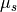
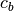
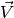
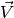

Developer guide:¶
poolvr.table: Model of the pool table’s geometry and other physical parameters¶
poolvr.physics: event-based Pool physics simulator¶
This module implements an event-based pool physics simulator based on the paper (available at http://web.stanford.edu/group/billiards/AnEventBasedPoolPhysicsSimulator.pdf):
AN EVENT-BASED POOL PHYSICS SIMULATOR
Will Leckie, Michael Greenspan
DOI: 10.1007/11922155_19 · Source: DBLP
Conference: Advances in Computer Games, 11th International Conference,
Taipei, Taiwan, September 6-9, 2005.
-
class
poolvr.physics.PoolPhysics(num_balls=16, ball_mass=0.17, ball_radius=0.028575, mu_r=0.016, mu_sp=0.044, mu_s=0.2, mu_b=0.06, c_b=4000.0, E_Y_b=2400000000.0, g=9.81, initial_positions=None, use_simple_ball_collisions=False, **kwargs)[source]¶ Pool physics simulator
Parameters: - mu_r –
 , rolling friction coefficient
, rolling friction coefficient - mu_sp –
 , spinning friction coefficient
, spinning friction coefficient - mu_s – , sliding friction coefficient
- mu_b –
 , ball-to-ball collision friction coefficient
, ball-to-ball collision friction coefficient - c_b – , ball material’s speed of sound
- E_Y_b –
 , ball material’s Young’s modulus
, ball material’s Young’s modulus - g – downward acceleration due to gravity
-
eval_accelerations(t, balls=None, out=None)[source]¶ Evaluate the linear accelerations of all balls at game time t.
Returns: shape (N, 3) array, where N is the number of balls
-
eval_angular_velocities(t, balls=None, out=None)[source]¶ Evaluate the angular velocities of all balls at game time t.
Returns: shape (N, 3) array, where N is the number of balls
-
eval_positions(t, balls=None, out=None)[source]¶ Evaluate the positions of a set of balls at game time t.
Returns: shape (N, 3) array, where N is the number of balls
-
eval_quaternions(t, out=None)[source]¶ Evaluate the rotations of a set of balls (represented as quaternions) at game time t.
Returns: shape (N, 4) array, where N is the number of balls
-
eval_velocities(t, balls=None, out=None)[source]¶ Evaluate the velocities of a set of balls at game time t.
Returns: shape (N, 3) array, where N is the number of balls
- mu_r –
 , which is specified
in coordinates relative to the ball’s center with the
, which is specified
in coordinates relative to the ball’s center with the  -axis
aligned with the horizontal component of the cue’s impact velocity
V = , i.e.
-axis
aligned with the horizontal component of the cue’s impact velocity
V = , i.e.
 .
.poolvr.game: Pool game classes which implement game rules, initial conditions, table setup, etc.¶
-
class
poolvr.game.PoolGame(ball_colors=[14540254, 15658496, 238, 15597568, 15597806, 15628032, 60928, 12264004, 1118481, 15658496, 238, 15597568, 15597806, 15628032, 60928, 12264004], ball_radius=0.028575, table=None, **kwargs)[source]¶ Game state for a pool “game”
Parameters: - ball_colors – array defining a base color for each ball
- stripe_colors – optional map defining a stripe color for each ball that is striped
poolvr.gl_rendering: OpenGL renderer, node-based scenegraph with glTF-like datatypes¶
-
class
poolvr.gl_rendering.OpenGLRenderer(multisample=0, znear=0.1, zfar=1000, window_size=(960, 1080))[source]¶
-
class
poolvr.gl_rendering.Program(vs_src, fs_src, parse_attributes=True, parse_uniforms=True)[source]¶ GLSL program
-
class
poolvr.gl_rendering.Technique(program, attributes=None, uniforms=None, states=None)[source]¶ GL rendering technique (based off of Technique defined by glTF schema)
poolvr.primitives: Various primitive geometry classes for the OpenGL renderer and the physics engine¶
-
class
poolvr.primitives.SpherePrimitive(radius=0.5, widthSegments=16, heightSegments=12, phiStart=0.0, phiLength=6.283185307179586, thetaStart=0.0, thetaLength=3.141592653589793)[source]¶ Sphere geometry based on three.js implementation: https://github.com/mrdoob/three.js/blob/44ec6fa7a277a3ee0d2883d9686978655bdac235/src/geometries/SphereGeometry.js
poolvr.billboard_particles: OpenGL billboard particle class which is used to render the balls¶
poolvr.ode_physics: Open Dynamics Engine (ODE)-based physics simulator (time-stepped)¶
Open Dynamic Engine-based pool physics simulator